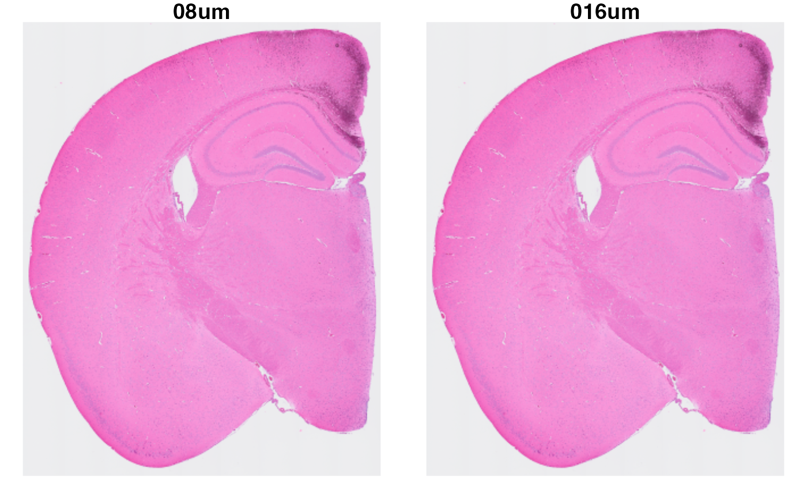

VisiumHD: loading and basic plotting
Last compiled: 19 March 2025
visiumHD.RmdIn this article, we will show how to load and work with VisiumHD data
using semla.
We are going to be using the FFPE mouse brain test dataset that is available at 10x Genomics website. Specifically, we are going to use the binned_outputs folder. Mouse brain, FFPE, 6.5mm.
Overview
Introduction to VisiumHD
The high-resolution VisiumHD commercialized by 10x Genomics in spring 2024 follows the same philosophy as the traditional Visium platform we are used to: spatially barcoded spots capture the transcriptome (or most of the transcriptome since it is probe based but now there is FF protocol), and the location of the transcripts can be then mapped to the tissue by the spatial sequence that is specific to each spot. While similar in philosophy, both technologies have some fundamental differences:
- The capture area in Visium are rounded spots distributed in a honeycomb or hexagonal pattern, while in VisiumHD they are squares distributed in a grid pattern.
- In the traditional Visium, there is a distance of 100um between the spot’s center, whereas in VisiumHD there is no gaps in between. All the spots are immediately next to each-other, leaving no space.
- In Visium, the spots are 55um in diameter, meaning that the spatial resolution for the technology is 55um. In VisiumHD, the spots/squares are 2um in side, meaning that the spatial resolution is of 2um. In theory, this should allow for a sub-cellular resolution of the transcriptome. To put this into context, there is around \((55/2)^2\) VisiumHD spots per Visium spot.
So, 3 main things regarding VisiumHD: the spots are now squares instead of circles, the spots have no empty space in between them, and the size of the spots is 2um. This is a bit ugly, but maybe it can help put these numbers into context:
As a side note, maybe it is more accurate to refer to VisiumHD’s capture areas as squares, but due to old habit we will still refer to them as spots.
Data sparsity
An inherited problem of high-resolution spatial transcriptomics, be that sequencing-based (like BGI’s Stereo-seq, Curio’s Slide-seq, and other alternatives) or imaging-based (like 10x Genomics’s ISS platform Xenium, VIZGEN’s MERSCOPE, and others), is that the data tends to be quite sparse: few data points per spatial region. A common approach to circumvent this issue is to bin/group the spatial regions to increase the density of the data. Nevertheless, the cost of this binning is that you lose spatial resolution. There are different ways to bin the spatial data, but the most common approaches are via cell segmentation and grid binning. So, with high-resolution data, you have the following problem: \(HighSpatialResolution = SparseData = Binning = NotHighSpatialResolutionAnymore\).
This is a problem the field is facing, and it will be interesting to see what creative approaches the community takes in order to maximize the information while minimizing the decrease in spatial resolution. As of the time this markdown was last knitted, the approach taken by 10x Genomics by default is grid binning. What this means is that all spots that are within a certain distance of each other will be grouped under the same spot, and their expression data summed up. The spots in VisiumHD are 2um in side, so if we talk about an 8um bin we mean that the new spots are going to be squares of 8um in side: we will be adding up the expression of \(4*4\) adjacent 2um spots to generate one 8um spot.
Grid binning
In VisiumHD, the “original” count data is the count data at the 2um spatial resolution, but 10x Genomics provides several binned_outputs by default when running spaceranger: 2, 8 and 16, with the option of specifying a custom resolution when calling spaceranger. At the 8um bin, each spot is a sum of \(4*4\) 2um spots; at 16um bin, each spot is a sum of \(8*8\) 2um spots; and so on.
For each one of these resolutions, spaceranger returns an entire folder with the structure we are used to from the normal Visium. This folder will contain the spatial position of each spot, the count matrix, the tissue HE image and the json file required to map the spots to the HE image.
Folder structure
We can think of each subfolder in the binned_outputs directory as it’s own sample. So for each tissue section, we will have at least “3 samples”: one for the 2um resolution, another for the 8um and another for the 16um. But do not forget that all the bin sizes above 2um are made up by adding up the “original” count data, which is the 2um data.
Load data
First we need to load some 10x VisiumHD data. You can run the code chunk below or follow this link to download it manually.
tmpdir <- "." # Set current wd or change to tmpdir()
dir.create(paste0(tmpdir, "/mousebrain"))
targetdir <- paste0(tmpdir, "/mousebrain/visium-hd")
dir.create(targetdir)
destfile <- paste0(targetdir, "/mouse_brain_HD.tar.gz")
download.file("https://cf.10xgenomics.com/samples/spatial-exp/3.0.0/Visium_HD_Mouse_Brain/Visium_HD_Mouse_Brain_binned_outputs.tar.gz", destfile = destfile)
# now we decompress it
untar(paste0(targetdir, "mouse_brain_HD.tar.gz")As mentioned above, we can consider each resolution as its separate
section, and load them as such into R using semla. Let’s
construct the infoTable with information regarding all the
resolutions.
# directory where the data is stored
st.dir <- file.path(getwd(), "mousebrain/visium-hd/binned_outputs")
# specify resolutions to load into memory
res <- paste(0, c(2, 8, 16), "um", sep = "")
all.res <- paste(res, collapse = "|")
# retrieve the directories for each resolution
res.dir <- list.dirs(st.dir, recursive = FALSE) |>
stringr::str_subset(pattern = all.res)
# build the infoTable for all resolutions
infoTable <- data.frame(
samples = list.files(res.dir,
full.names = TRUE, recursive = TRUE,
pattern = paste0("^filtered_feature.+.h5$")
),
spotfiles = list.files(res.dir,
full.names = TRUE, recursive = TRUE,
pattern = "parquet$|positions.csv$"
),
imgs = list.files(res.dir,
recursive = TRUE,
full.names = TRUE, pattern = "hires"
) |>
str_subset(all.res),
json = list.files(st.dir,
recursive = TRUE,
full.names = TRUE, pattern = "^scalefactors"
) |>
str_subset(all.res),
resolution = res,
sample_ID = "mousebrain"
)Now that we have built the infoTable, we can load the VisiumHD data
into memory. Be aware that the 2um data is very big, so due to RAM
issues you might not be able to work with this data locally. For
example, if you want to build the infoTable to store only
the 8 and 16um resolutions, you could do the following:
st.dir <- file.path(getwd(), "mousebrain/visium-hd/binned_outputs")
res <- paste(0, c(8, 16), "um", sep = "")
all.res <- paste(res, collapse = "|")
# retrieve the directories for each resolution
res.dir <- list.dirs(st.dir, recursive = FALSE) |>
str_subset(pattern = all.res)
# build the infoTable for all resolutions
infoTable <- data.frame(
samples = list.files(res.dir,
full.names = TRUE, recursive = TRUE,
pattern = paste0("^filtered_feature.+.h5$")
),
spotfiles = list.files(res.dir,
full.names = TRUE, recursive = TRUE,
pattern = "parquet$|positions.csv$"
),
imgs = list.files(res.dir,
recursive = TRUE,
full.names = TRUE, pattern = "hires"
) |>
str_subset(all.res),
json = list.files(st.dir,
recursive = TRUE,
full.names = TRUE, pattern = "^scalefactors"
) |>
str_subset(all.res),
resolution = res,
sample_ID = "mousebrain"
)Regardless of which resolution you want to load, with the built
infoTable now we can load the data using
ReadVisiumData() like you would in your standard Visium
sections. If you have the 2um resolution in the infoTable, this can take
a bit of time.
se.hd <- ReadVisiumData(infoTable)
se.hd## An object of class Seurat
## 19059 features across 492460 samples within 1 assay
## Active assay: Spatial (19059 features, 0 variable features)
## 2 layers present: counts, dataAs mentioned before, now each resolution of the VisiumHD experiment is stored in the Seurat object as an individual experiment. Let’s take a look at the HE images. You can note how, even though we are labeling each image by expressing from which resolution they come from, they are exactly the same image.
se.hd <- LoadImages(se.hd)
ImagePlot(se.hd, label_by = "resolution")
This object is fully compatible with all of semla’s
functions, so you can proceed normally with your analysis!
Analysis
Two of the main issues when working with high-resolution spatial transcriptomics is data sparsity and the size of the datasets. For example, do not be surprised if your standard analysis does not run at all at the higher resolutions in VisiumHD data. For standard Seurat clustering (v4 and prior), we recommend working on a high performance computing cluster.
Thus, we are going to perform the standard analysis pipeline on the 8 and 16um bins.
Seurat clustering
# 16um
se.16 <- SubsetSTData(se.hd, expression = resolution == "016um")
se.16 <- se.16 |>
NormalizeData() |>
ScaleData() |>
FindVariableFeatures() |>
RunPCA() |>
FindNeighbors(reduction = "pca", dims = 1:10) |>
FindClusters(resolution = 0.2)
# 8um
se.8 <- SubsetSTData(se.hd, expression = resolution == "08um")
se.8 <- se.8 |>
NormalizeData() |>
ScaleData() |>
FindVariableFeatures() |>
RunPCA() |>
FindNeighbors(reduction = "pca", dims = 1:10) |>
FindClusters(resolution = 0.2)Non-negative matrix factorization
In the same way we can perform the standard Seurat analysis pipeline, we can also follow our tutorial for performing non-Negative matrix factorization (NMF).
library(singlet)
# 16um
se.16 <- se.16[VariableFeatures(se.16), ]
## Set seed for reproducibility
set.seed(42)
se.16 <- RunNMF(se.16)
# 8um
se.8 <- se.8[VariableFeatures(se.8), ]
## Set seed for reproducibility
set.seed(42)
se.8 <- RunNMF(se.8)Plotting
We have done a few changes to semla’s plotting functions
to properly represent this new type of data. The capture areas of a
Visium slide are circles, and we represent them as such when using
MapFeatures(), MapLabels() or
MapMultipleFeatures(). However, in VisiumHD the capture
areas are no longer circles, but rather squares. Thus, we have added a
new argument for all of the aforementioned functions named
shape =. This new argument allows for 3 different
options:
shape = "point". This would be the default argument that the functions will take. It will represent the capture areas as circles.shape = "tile". One of the new options, it will represent the capture areas as squares. Unless specified otherwise in the argumentspot_side, this shape will represent the exact dimensions of the capture areas in respect to the tissue.shape = "raster". The other new plotting option. Liketile, it will represent the capture areas as squares. The main peculiarity of this argument is that it is a faster implementation oftile, which could be useful when plotting at high resolutions. However, this argument does not accept the HE image, so one should setimage_use = NULLwhen using this argument.
These arguments are compatible with all of the other arguments
already present in the plotting functions, like crop_area
and such. As a side note, even though these options make sense with
VisiumHD data, you can also use them with normal Visium data in order to
represent the capture areas as squares instead of the real circles.
With this information in mind, let’s take a look at the results of our analysis, starting with Seurat’s clustering:
p <- MapLabels(se.16,
column_name = "seurat_clusters",
override_plot_dims = TRUE,
shape = "tile",
image_use = "raw",
label_by = "resolution"
)
p
p <- MapLabels(se.8,
column_name = "seurat_clusters",
override_plot_dims = TRUE,
shape = "tile",
image_use = "raw",
label_by = "resolution"
)
pNext, let’s take a quick look at the spatial distribution of some of the NMF factors computed in each resolution:
p <- MapFeatures(se.16,
features = "NMF_3",
label_by = "resolution",
image_use = "raw",
override_plot_dims = TRUE,
shape = "tile",
scale_alpha = TRUE,
colors = c("darkblue", "cyan", "yellow", "red", "darkred")
)
p
p <- MapFeatures(se.8,
features = "NMF_2",
label_by = "resolution",
image_use = "raw",
override_plot_dims = TRUE,
shape = "tile",
scale_alpha = TRUE,
colors = c("darkblue", "cyan", "yellow", "red", "darkred")
)
pPackage versions
-
semla: 1.3.1
Session info
## R version 4.3.3 (2024-02-29)
## Platform: aarch64-apple-darwin20.0.0 (64-bit)
## Running under: macOS 15.3
##
## Matrix products: default
## BLAS/LAPACK: /Users/javierescudero/miniconda3/envs/r-semla/lib/libopenblas.0.dylib; LAPACK version 3.12.0
##
## locale:
## [1] en_US.UTF-8/en_US.UTF-8/en_US.UTF-8/C/en_US.UTF-8/en_US.UTF-8
##
## time zone: Europe/Stockholm
## tzcode source: internal
##
## attached base packages:
## [1] stats graphics grDevices utils datasets methods base
##
## other attached packages:
## [1] stringr_1.5.1 semla_1.3.1 ggplot2_3.5.0 dplyr_1.1.4
## [5] SeuratObject_5.0.1 Seurat_4.3.0.1
##
## loaded via a namespace (and not attached):
## [1] RColorBrewer_1.1-3 rstudioapi_0.15.0 jsonlite_1.8.8
## [4] magrittr_2.0.3 spatstat.utils_3.0-5 magick_2.8.3
## [7] rmarkdown_2.26 fs_1.6.3 ragg_1.3.3
## [10] vctrs_0.6.5 ROCR_1.0-11 memoise_2.0.1
## [13] spatstat.explore_3.2-6 htmltools_0.5.7 forcats_1.0.0
## [16] sass_0.4.8 sctransform_0.4.1 parallelly_1.38.0
## [19] KernSmooth_2.23-22 bslib_0.6.1 htmlwidgets_1.6.4
## [22] desc_1.4.3 ica_1.0-3 plyr_1.8.9
## [25] plotly_4.10.4 zoo_1.8-12 cachem_1.0.8
## [28] igraph_2.0.2 mime_0.12 lifecycle_1.0.4
## [31] pkgconfig_2.0.3 Matrix_1.6-3 R6_2.5.1
## [34] fastmap_1.1.1 fitdistrplus_1.1-11 future_1.34.0
## [37] shiny_1.8.0 digest_0.6.34 colorspace_2.1-0
## [40] patchwork_1.2.0 tensor_1.5 irlba_2.3.5.1
## [43] textshaping_0.3.7 progressr_0.14.0 fansi_1.0.6
## [46] spatstat.sparse_3.0-3 httr_1.4.7 polyclip_1.10-6
## [49] abind_1.4-5 compiler_4.3.3 bit64_4.0.5
## [52] withr_3.0.0 highr_0.10 MASS_7.3-60
## [55] tools_4.3.3 lmtest_0.9-40 httpuv_1.6.14
## [58] future.apply_1.11.1 goftest_1.2-3 glue_1.7.0
## [61] dbscan_1.1-12 nlme_3.1-164 promises_1.2.1
## [64] grid_4.3.3 Rtsne_0.17 cluster_2.1.6
## [67] reshape2_1.4.4 generics_0.1.3 hdf5r_1.3.10
## [70] gtable_0.3.4 spatstat.data_3.0-4 tidyr_1.3.1
## [73] data.table_1.15.2 sp_2.1-3 utf8_1.2.4
## [76] spatstat.geom_3.2-9 RcppAnnoy_0.0.22 ggrepel_0.9.5
## [79] RANN_2.6.1 pillar_1.9.0 spam_2.10-0
## [82] later_1.3.2 splines_4.3.3 lattice_0.22-5
## [85] bit_4.0.5 survival_3.5-8 deldir_2.0-4
## [88] tidyselect_1.2.0 miniUI_0.1.1.1 pbapply_1.7-2
## [91] knitr_1.45 gridExtra_2.3 scattermore_1.2
## [94] xfun_0.42 matrixStats_1.2.0 stringi_1.8.3
## [97] lazyeval_0.2.2 yaml_2.3.8 evaluate_0.23
## [100] codetools_0.2-19 tibble_3.2.1 cli_3.6.2
## [103] uwot_0.1.16 arrow_14.0.1 xtable_1.8-4
## [106] reticulate_1.35.0 systemfonts_1.0.5 munsell_0.5.0
## [109] jquerylib_0.1.4 Rcpp_1.0.12 globals_0.16.3
## [112] spatstat.random_3.2-3 zeallot_0.1.0 png_0.1-8
## [115] parallel_4.3.3 ellipsis_0.3.2 assertthat_0.2.1
## [118] pkgdown_2.0.7 dotCall64_1.1-1 listenv_0.9.1
## [121] viridisLite_0.4.2 scales_1.3.0 ggridges_0.5.6
## [124] leiden_0.4.3.1 purrr_1.0.2 rlang_1.1.3
## [127] cowplot_1.1.3 shinyjs_2.1.0